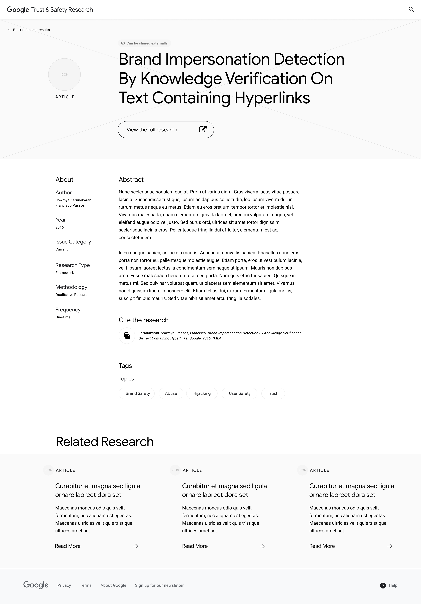

Bringing awareness to Google's best-kept secret.
Billions of people trust Google's products to help them every day — that’s why helpfulness is at the core of their mission. Being helpful also means being responsible and preventing harm for their users and for society as a whole. That’s where the Google Trust & Safety team comes in.
The Trust & Safety team produces critical research to inform policies on online issues like abuse, fraud, and spam. This research has profound impact within and beyond Google, yet it suffers from being unknown.
My team worked closely with the Trust & Safety (T & S) team to create a digital platform that brings their research to light, extending the reach and impact of their work.
My contributions
- Content Strategy
- UX Design
- Visual Design
- Client Engagement
My tools
- Figma
- InVision
- Google Slides
My teammates
- Joe Branton
- Kim Coghill
- Ashley Hill
- Susu Kulow
- Meg Linen
- Eric Lohman
- Kali Rupert
- Jessica Straton
- Nate Witte
Gathering context
Before deciding what we were going to create, we needed to know who we would be designing for. We interviewed 9 stakeholders to familiarize ourselves with the T & S team, their research, and the audience they were trying to reach. Here's what we learned:
Key Audiences
The T & S research team has 3 key audiences. We define these audiences by how they interface with the research.
Super Users
- T & S researchers within Google
- Other Google researchers
- Researchers in academia, non-profits, and think tanks
-
Engaged Users
- Google product & policy teams
- Tech industry T & S teams
-
Occasional Users
- Google marketers
- Government officials
- Media organizations
We were surprised to find that though the key audiences vary in role, they experience similar barriers to engagement with the T & S team and their research.
Barrier 1
External and internal audiences struggle to describe the mission and the scope of Trust & Safety research. This lack of clarity creates confusion.
Barrier 2
Each audience has varying levels of access to the research. This lack of transparency creates frustration.
Barrier 3
When audiences can access the research, they don't necessarily know how to apply it to their own work. This lack of guidance creates apathy.
Formulating the content strategy
The barriers our audiences experienced guided our content strategy, leading with a series of principles & recommendations to inform the platform's architecture.
Guiding principles
Principle 1
Our audience should feel confident in their choice to engage with the T & S team and their research.
Recommendation 1
The platform should clearly position who the T & S team is, what their work encompasses, and how their audiences can reach them.
Principle 2
Our audience should feel empowered to find the research they need.
Recommendation 2
The platform should guide audiences down pathways based on their needs and give them appropriate ways to engage with the research.
Principle 3
Our audience should feel compelled to discover new research.
Recommendation 3
The platform's content should evolve with the T & S landscape and should surface the most helpful research for our audiences.
Information architecture
We put our principles into action, mapping our recommendations onto 3 page types.

Wireframing solutions
With an architectural plan to build on, we wireframed content layouts for each of the 3 page types – evaluating the hierarchy in each iteration for usability and clarity.
During this 1-week wireframe sprint, we designed our wireframes in Figma. This enabled the design team to rapidly build on one another's ideas, and promoted co-creation between the design and development teams.
Landing Page
As the first touchpoint for the majority of our audiences, the Landing Page had to do a lot of heavy lifting. With this page, we explored ways to:
- Establish the mission of T & S research.
- Highlight the impact of the work.
- Surface the most notable research.
- Provide multiple ways to engage with the research based on audience needs.
Selected Landing Page

Additional exploration

Search Page
[When/why do people go to Search?] With this page, we explored ways to:
- Give viewers the most relevant search result information
- Let viewers preview the research content before committing to it.
- Give viewers tools to refine their search through a powerful tagging system.
- Call out the levels of access for each piece of content.
Selected Search Page

Additional exploration

Detail Page
[When/why do people go to Detail page?] With this page, we explored ways to:
- Establish the mission of T & S research.
- Highlight the impact of the work.
- Surface the most notable research.
- Provide multiple ways to engage with the research based on audience needs.
Selected Detail Page
Additional exploration
To walk the Trust & Safety team through our wireframe, we created user flows for each audience.

Thank you for your awesome creativity in the wireframes. I could see all our prior thoughts and discussions manifested!
– Kalpa Raj, Google T & S Project Manager
Creating a brand system
We created a design system that married 2 Trust & Safety sites
The interior of ENJOY: photographed by Mike Washington
The interior of ENJOY: photographed by Mike Washington
This is amazing work. Let's continue this partnership for the external launch.
– Kalpa Raj, Google Trust & Safety Project Manager